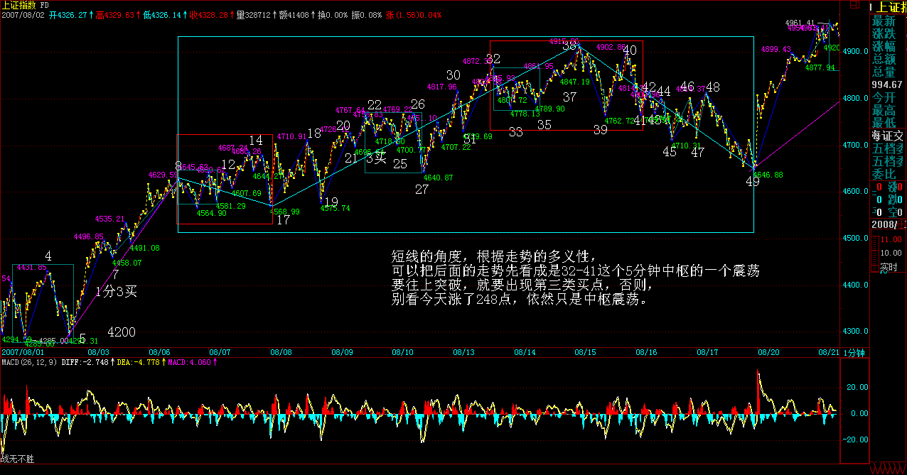

|
 |
教你炒股票71：线段划分标准的再分辨
(2007-08-16
23:02:06)
(注：这课是针对前回复中大盘网友44线段的疑问解答）
虽然67课已经给出了线段划分的标准，但由于那里用的是比较抽象的类数学语言，所以理解上可能还有困难，因此，逐一进行再分辨。
首先要分辨的，是特征序列中元素的包含关系。注意，特征序列的元素包含关系，首先的前提是这元素都在一特征序列里，如果两个不同的特征序列之间的元素，讨论包含关系是没意义的。
显然，特征序列的元素的方向，和其对应的段的方向是刚好相反的，例如，一个向上段后接着一个向下段，前者的特征序列元素是向下的，后者是向上的，因此，根本也不可能存在包含的可能。
那么，为什么可以定义特征序列的分型呢？因为在实际判断中，在前一段没有被笔破坏时，依然不能定义后特征序列的元素，这时候，当然可以存在前一特征序列的分型，这时候，由于还在同一特征序列中，因此，序列元素的包含关系是可以成立的；
而当前一段被笔破坏时，显然，最早破坏的一笔如果不是转折点开始的第一笔，那么，特征序列的分型结构也能成立，因为在这种情况下，转折点前的最后一个特征序列元素与转折点后第一个特征元素之间肯定有缺口，而且后者与最早破坏那笔肯定不是包含关系，否则该缺口就不可能被封闭，破坏那笔也就不可能破坏前一线段的走势。这里的逻辑关系很明确的，线段要被笔破坏，那么必须其最后一个特征序列的缺口被封闭，否则就不存在被笔破坏的情况。
那么，现在只剩下最后一种情况，就是最早破坏那笔就是转折点下来的第一笔，这种情况下，这一笔，如果后面延伸出成为线段的走势，那么这一笔就属于中间地带，既不能说是前面一段的特征序列，更不能说是后一段的特征序列，在这里情况下，即使出现似乎有特征序列的包含关系的走势，也不能算，因为，这一笔不是严格地属于前一段的特征序列，属于待定状态，一旦该笔延伸出三笔以上，那么新的线段就形成了，那时候谈论前一线段特征序列的包含关系就没意义了。
总之，上面说得很复杂，其实就是一句话，特征序列的元素要探讨包含关系，首先必须是同一特征序列的元素，这在理论上十分明确的。
从上面的分析就可以知道，从转折点开始，如果第一笔就破坏了前线段，进而该笔延伸出三笔来，其中第三笔破点第一笔的结束位置，那么，新的线段一定形成，前线段一定结束。
这种情况还有更复杂一点的情况，就是第三笔完全在第一笔的范围内，这样，这三笔就分不出是向上还是向下，这样也就定义不了什么特征序列，为什么？因为特征序列是和走势相反的，而走势连方向都没有，那怎么知道哪个元素属于特征序列？这种情况，无非两种最后的结果：1、最终还是先破了第一笔的结束位置，这时候，新的线段显然成立，旧线段还是被破坏了；2、最终，先破第一笔的开始位置，这样，旧线段只被一笔破坏，接着就延续原来的方向，那么，显然旧线段依然延续，新线段没有出现。
在67课里，把线段的划分分为两种情况，显然，分清楚是哪种情况，对划分线段十分关键。其实，在那里已经把问题说得很清楚，判断的标准只有一个，就是特征序列的分型中，第一和第二元素间存不存在特征序列的缺口。从上面的分析可以知道，这个分型结构中所谓特征序列的元素，其实是站在假设旧线段没被破坏的角度说的，而就像所有的分型一样，就算是一般K线的，都是前后两段走势的分水岭、连接点。这和包含的情况不同，包含的关系是对同一段说的，而分型，必然是属于前后的，这时候，在构成分型的元素里，如果线段被最终破坏，那后面的元素肯定不是特征序列里的，也就是说，这时候，分型右侧的元素肯定不属于前后任何一段的特征序列。
这个道理其实很明白，例如前一段是向上的，那么特征序列元素是向下的，而在顶分型的右侧元素，如果最终真满足破坏前线段的要求，那么后线段的方向就是向下的，其特征序列就是向上的，而顶分型的右侧元素是向下的，显然不属于后一段的特征元素，而该顶分型的右侧元素又属于后一段，那么显然更不是前一段的特征元素。所以，对于顶分型的右侧特征元素，只是一般判断方面的一种方便的预设，就如同几何里面，添加辅助线去证明问题一样，辅助线不属于图形本身，就如同顶分型的右侧特征元素其实不一定属于任何的特征元素，但对研究有帮助，当然是要大力去用的，如此而已。
其实，线段的划分，都是可以当下完成的，无非是如下的程序：假设某转折点是两线段的分界点，然后对此用线段划分的两种情况去考察是否满足，如果满足其中一种，那么这点就是真正的线段的分界点；如果不满足，那就不是，原来的线段依然延续，就这么简单。
特征序列的分型中，第一元素就是以该假设转折点前线段的最后一个特征元素，第二个元素，就是从这转折点开始的第一笔，显然，这两者之间是同方向的，因此，如果这两者之间有缺口，那么就是第二种情况，否则就是第一种，然后根据定义来考察就可以。
这里还要强调一下包含的问题，上面的分析知道，在这假设的转折点前后那两元素，是不存在包含关系的。因为，这两者已经被假设不是同一性质的东西，不一定是同一特征序列的；但假设的转折点后的顶分型的元素，是可以应用包含关系的。为什么？因此，这些元素间，肯定是同一性质的东西，或者就是原线段的延续，那么就同是原线段的特征序列中，或者就是新线段的非特征序列中，反正都是同一类的东西，同一类的东西，当然可以考察包含关系。
估计看了上面的话，很多人更晕了。下面有几个图，各位可以仔细揣摩一下。但最好还是习惯从定义出发。另外，大盘网友问到的那个图，显然，根据定义，是两个线段，而今天42-44的分段，显然也是成立的。
1、线段的特征序列中元素的包含关系：
2、前一特征序列的分型
3、最后一种情况，就是最早破坏那笔就是转折点下来的第一笔，这种情况下，这一笔，如果后面延伸出成为线段的走势，那么这一笔就属于中间地带，既不能说是前面一段的特征序列，更不能说是后一段的特征序列，在这里情况下，即使出现似乎有特征序列的包含关系的走势，也不能算，因为，这一笔不是严格地属于前一段的特征序列，属于待定状态，一旦该笔延伸出三笔以上，那么新的线段就形成了，那时候谈论前一线段特征序列的包含关系就没意义了。
4、第三笔完全在第一笔的范围内，这样，这三笔就分不出是向上还是向下，这样也就定义不了什么特征序列，为什么？因为特征序列是和走势相反的，而走势连方向都没有，那怎么知道哪个元素属于特征序列？这种情况，无非两种最后的结果：1、最终还是先破了第一笔的结束位置，这时候，新的线段显然成立，旧线段还是被破坏了；2、最终，先破第一笔的开始位置，这样，旧线段只被一笔破坏，接着就延续原来的方向，那么，显然旧线段依然延续，新线段没有出现。
5、但假设的转折点后的顶分型的元素，是可以应用包含关系的。为什么？因此，这些元素间，肯定是同一性质的东西，或者就是原线段的延续，那么就同是原线段的特征序列中，或者就是新线段的非特征序列中，反正都是同一类的东西，同一类的东西，当然可以考察包含关系。
每日解盘(2007-08-17 15:58:48)
来自大洋彼岸的暗算
(2007-08-17
15:58:48)
全球资本市场这连续几年的多头氛围，好不容易给空头逮着一机会，各种衍生工具一起作用，大有来一次1987年的味道。或者，至少怎么都来次1997年。其实，2007年要出点事，是天经地义的，看看1987-1997-2007，瞎子都能看出规律来。不过，由于目前的全球化体系，各国间如果能有效配合，震荡的力度是可以充分减少的。例如，1997就比1987要小。
站在货币战争的角度，本ID从来都认为，美国人的这些把戏，不过是让全世界为他们的堕落埋单，所以根本没有任何值得同情的理由。而且，因为美国人在世界资本体系中的位置，他们受到的惩罚其实更多让全世界分享了，站在根本的角度，那不过是美国人的一个暗算，道理很简单，涨不过你，难道不可以拖累你？一起跌下来，让你更惨，或者将自己的烂东西让全世界一起背，你说，最后最大的利益者难道不是美国人？
美国不是泰国，美国就算崩盘了，其中依然会渔利不少，肯定还是大赢家。至于美国的最核心的统治阶级，最核心的利益集团，那更是赢家中的赢家。现在的问题是，这暗算是否把你给暗算了。
当然，对于一般散户来说，这些问题都没必要研究。今天，已经有熟人在说，上周刚过去香港的已经没了一半了。天下乌鸦一般黑，有什么奇怪的。以为QDII就如何有投资价值，那是脑子进水了。
让工行去为美国人下半旗帜吧，二、三线股可不陪你们玩。今天，依然有不少二、三线股企图星火燎原，不和美国人一般见识。这能否成为共识，这就不好说了。毕竟，现在有国外背景的资金，都在夺路而逃，甚至，很多人要把这里的资金拿去填美国月亮的窟窿，那就让他们的资金被资本市场人道毁灭去吧。
可以肯定地说，本周全球的恶劣走势，会引发各国金融当局的强力介入，因此，一个有力的反弹的出现，是很正常的，至于之前是否要制造空头陷阱，那并不重要。站在大方向看，这个反弹后，如果各国金融当局的政策不得力，甚至更大可能的，有某些全球利益集团，故意要政策不得力，那么，更大的下跌还在后面。看看1987年的走势，第一段的下跌并不严重，反而是反弹后的下跌才真正的令人开眼。
所以，这次10年周期的金融风暴的第一次下跌，并不是太重要的，关键是看后面反弹后基本面以及各国玩法的状态，那才是关键所在。
国内市场，本来基本面上就有所不同，如果能在这次波动中，把某些外国资金给清理掉，这也算是一件好事。但如果外面的世界继续狂风暴雨，说这里一点都不受影响，那是脑子进水了。想想那些从非法渠道进来的资金，他们的老家出事了，你说他们能不受影响？他们受影响了，国内的市场能不受影响？
技术上，30分钟中枢震荡已经成立，这没什么可说的，在前面已经反复说到这种情况的边界条件。图就不用贴了，今天的分段太简单，周一一起帖，这样可以节省一个图的上传量，这里的总量只有200，用不了几天。
个股上，一线成分股，将跟随外围，一旦外围走稳，将引发大反弹。二、三线股，关键是看这次资金的流入情况，但无论如何，个股行情将再次活跃。
最后问一句，600139，以前对他仇恨无比的，现在是什么心情？5月28到7月6日，就一个月的洗盘，都受不住，那还玩什么？不过，这也没什么，好象这里没说过的600594。本ID一个文化界的熟人，6月份在11、12元买了，明确告诉至少要翻倍。前两天，在腐败时碰到，说在10元砍掉了，因为听别人说，这公司要破产。本ID只能很有礼貌地无话可说了。
算了，废话就不说了，周末，腐败才是王道。
各位，腐败快乐。
先下，再见。
每日解盘(2007-08-20 15:48:47)
两年最大涨幅拉开泡沫化生存大幕(2007-08-20 15:48:47)
大盘中长线走势的判断，都在今早的 总市值超GDP后的泡沫化生存 里。其中最后一段有必要引用如下“显然，目前市场最疯狂的状态依然没有出现，外围因素制造短期的波动反而有利于市场能量的积累。在泡沫制造能力被充分发挥之前，市场不会最终逆转，第一阶段的成分股行情不会结束。不再战略性买进、只战略性持有，等待市场疯狂、等待第一阶段长线卖点的出现，是泡沫化状态下最应采取的策略。”今天，大盘以两年最大涨幅拉开泡沫化生存大幕。
至于大盘的中短走势，在上周五已经明确说过“可以肯定地说，本周全球的恶劣走势，会引发各国金融当局的强力介入，因此，一个有力的反弹的出现，是很正常的，至于之前是否要制造空头陷阱，那并不重要。”其后的走势，基本如此，在同一文章里，已经说了，最重要是反弹后的走势，需要关注的是相关政策的有效性，一旦救市政策失效，引发全球资本市场更大规模的杀跌，并不是什么天方夜谈。
回到上海指数，从纯技术的角度，下图里的8-49可以看成是一个30分钟中枢，但更可以看成是，对于8-17这个5分钟中枢，17-38的1分钟走势5分钟背驰后，必须有一个回拉至少回到8-17这个5分钟中枢里。显然，49已经跌破14，十分完美地演绎了本ID的理论。
超短线的角度，根据走势的多义性，可以把后面的走势先看成是32-41这个5分钟中枢的一个震荡，要往上突破，就要出现第三类买点，否则，别看今天涨了248点，依然只是中枢震荡。

个股方面，周五也说得很清楚了“个股上，一线成分股，将跟随外围，一旦外围走稳，将引发大反弹。二、三线股，关键是看这次资金的流入情况，但无论如何，个股行情将再次活跃。”显然，今天的走势完全与此符合。目前，行情要继续发展，必须把二、三线股点燃起来，这是今后行情是否能往纵深发展的关键，否则光拉一线大盘或者普涨走势，都不可能持续。
另外，周五用600139、600594为例子，只是说明持股的重要，如果没有做短线的本事，也没有持股的耐心，怎么可能长期战胜资本市场？不妨再举一个例子，那只唯一本ID明确说过的中字头股票600737，本ID在7月中8元时十分明确地告诉，这股票等于6元告诉你000999，纯粹就是给你准备点学费，可以安心学习。但现在又有多少人能从8元持有到现在？其实，前后也就1个月时间，如果这样都持不住，那就该干什么干什么吧。
今天有事，先下，再见
|
|
|
|